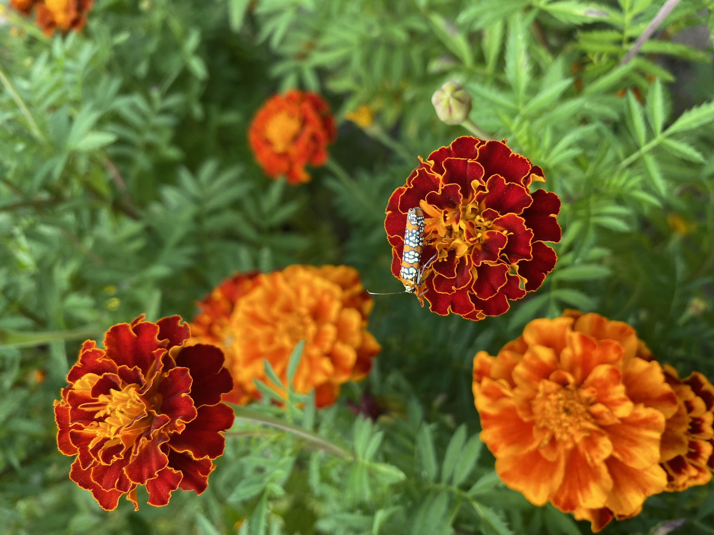
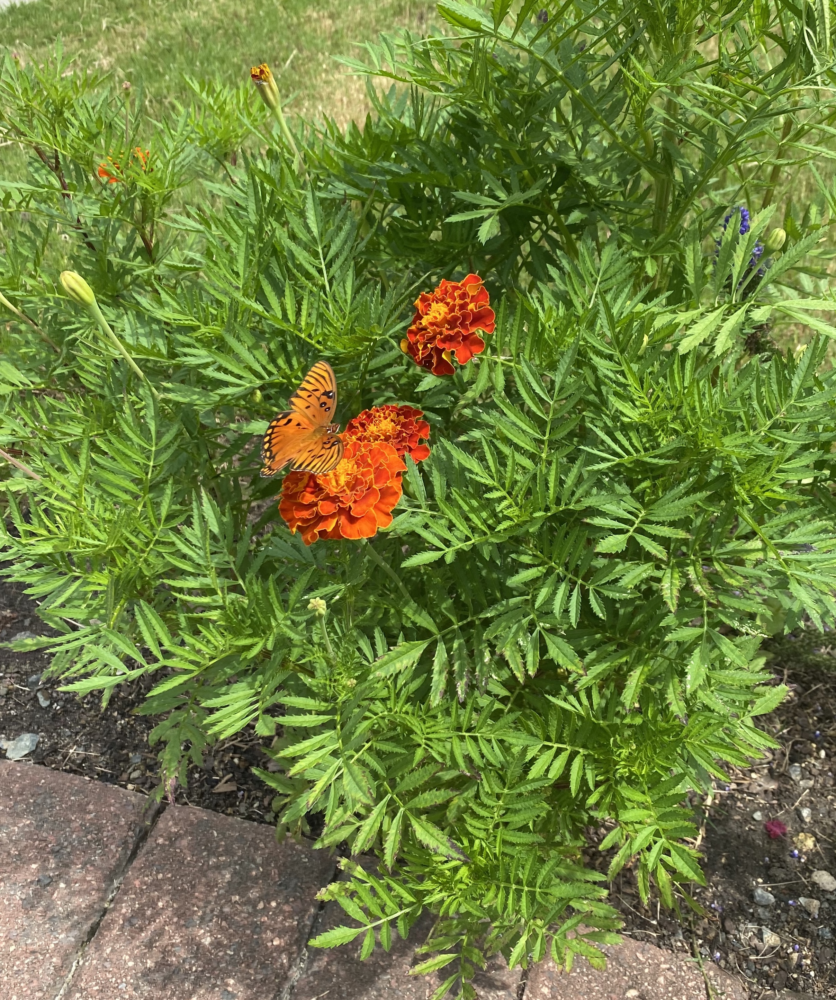
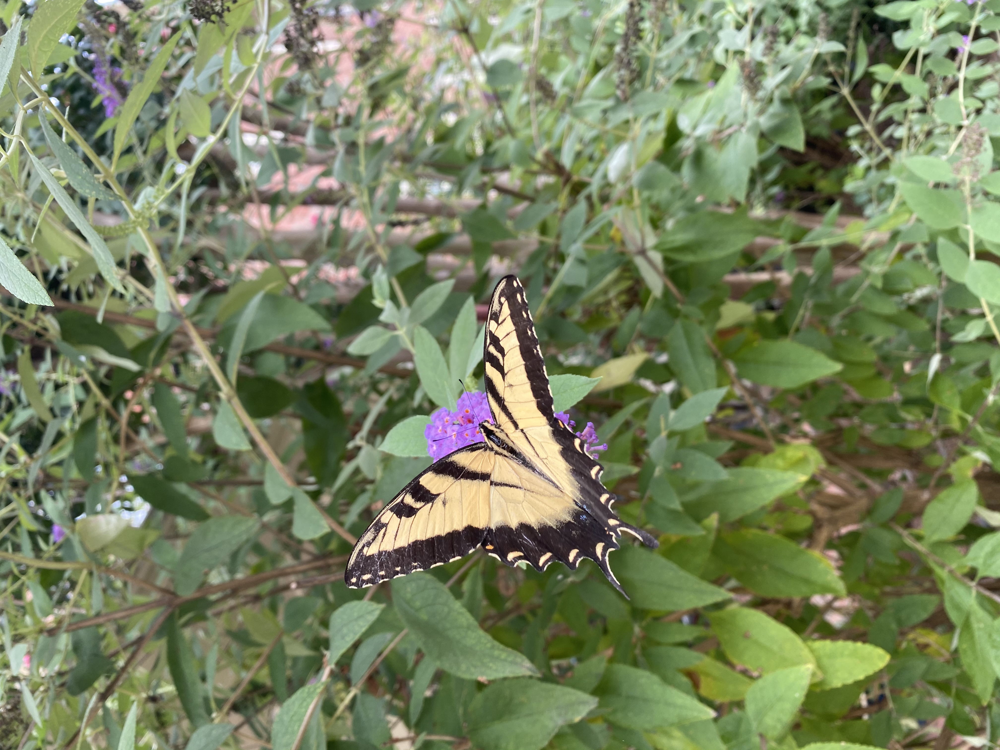
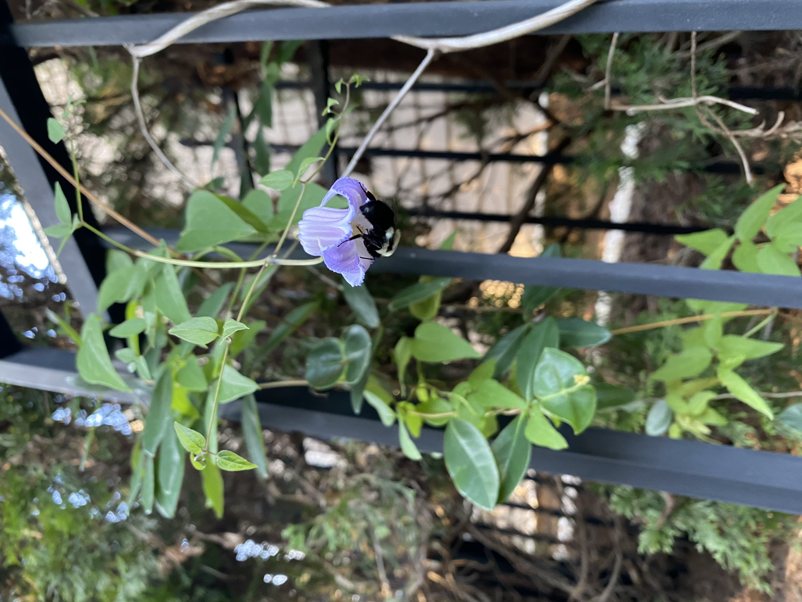
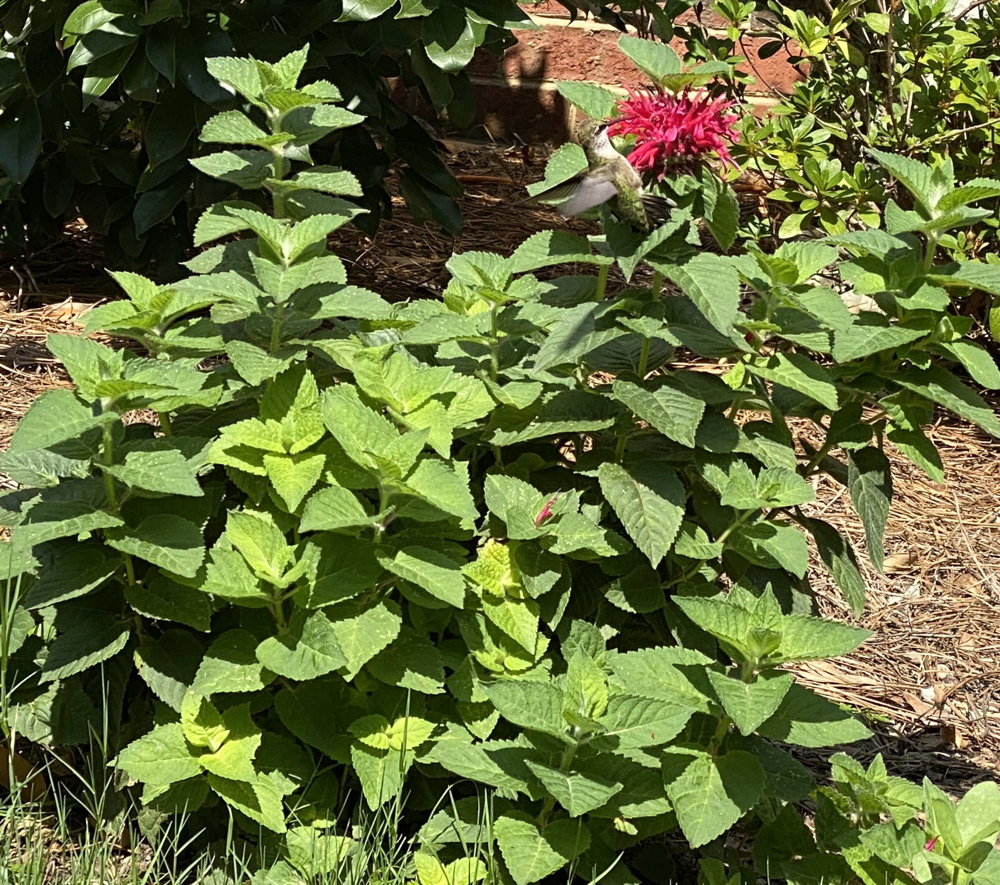
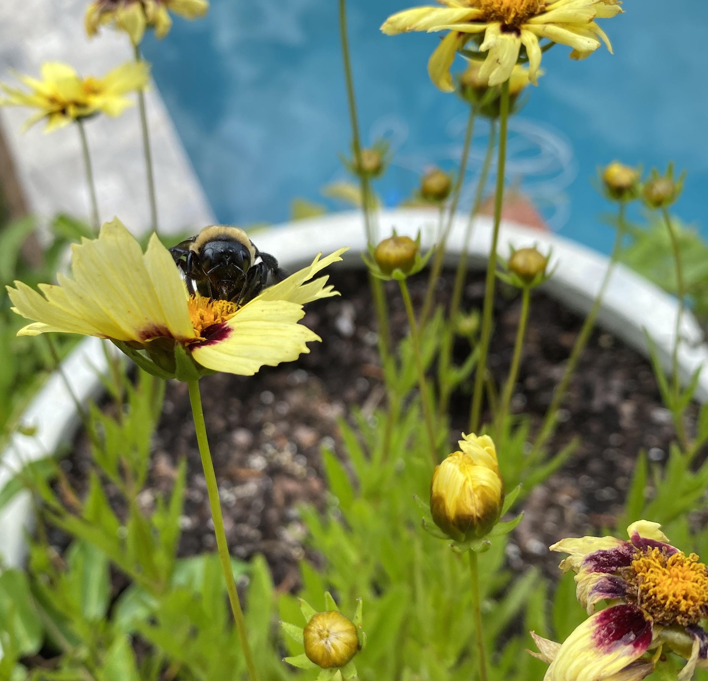
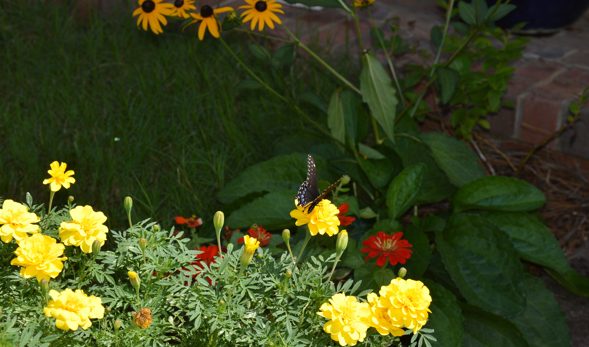
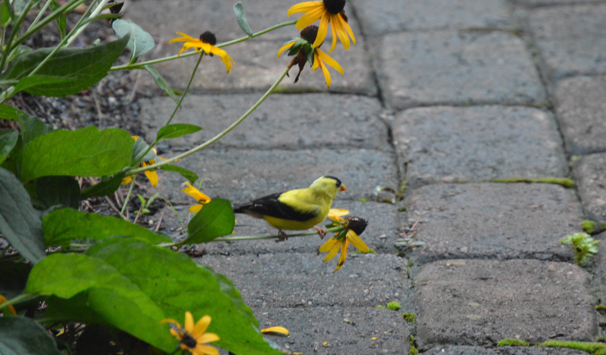

Welcome to my gardening page.
My goal is to support the plants native to US South East, however there are a few non-locals here too. The table on the data tab, has all the data I've collected so far. It is only a fraction of the local flora. I continue to add to the database and appreciate any feedback, which can be provided once I add the needed functionality. The visual tab (under construction) is intended for designing the garden. Plant choices in the visual tab are limited to those in database. If you need to "plant" something I don't have, you have to add it to the database first. Any information you add will be saved on your machine only. Clearing your browsing history will also erase that data.


To the left: a beautiful butterfly, maybe Agraulis Vanillae, on the Blood Orange Marigold, neat match of colors.
To the right: also Blood Orange Marigold with a moth, might be an Ailanthus Webworm Moth.

The swallowtail butterflies are frequent visitors of the butterfly bush. These butterfly
bushes, Buddleja, are enjoyed by many flying creatures, including different types of bees,
butterflies, hummingbirds and hummingbird moths. It's hard to let go of such an abundant
nectar source but it's something I'd like to do as the bush is not native to North America.
I've read that there are non-reseeding varieties now - a great alternative to consider.

The Swamp Leather Flower doesn't offer abundant foliage but its flowers are delicate, small and very beautiful.
Here is one visited by a bumblebee. I've planted my Swamp Leather Flower with Coral Honeysuckle for more green.
The Swamp Leather Flower dies to the ground in winter and comes back in spring, so it doesn't get as big as its
neighboring honeysuckle. The flowers are mostly at your eye level, perfect for viewing pleasure.
 The milkweed pictured here must be the healthiest in my garden.
The monarchs tend to ignore it, for reasons not entirely clear to me, maybe because it is on the hairy side.
Whatever the reason, the milkweed continues to thrive and gets to keep all its leaves.
It's been popular with bees, bumble and honey, as well as one butterfly. At one point this summer of 2020, there were 20 bumble bees
on it all at once. Towards the end of the summer, the milkweed bugs discovered this plant and sucked lots of juice out of it
but it still produced plenty of healthy seeds.
The milkweed pictured here must be the healthiest in my garden.
The monarchs tend to ignore it, for reasons not entirely clear to me, maybe because it is on the hairy side.
Whatever the reason, the milkweed continues to thrive and gets to keep all its leaves.
It's been popular with bees, bumble and honey, as well as one butterfly. At one point this summer of 2020, there were 20 bumble bees
on it all at once. Towards the end of the summer, the milkweed bugs discovered this plant and sucked lots of juice out of it
but it still produced plenty of healthy seeds.

This year I've started a row of native flowers along the road that gets some sun and some partial sun.
The phlox got quickly eaten every time I tried planting it, as well as all of the Black-eyed Susan, that was planted last year and was attempting to come back.
However, the newly planted Bee Balm got visited by a beautiful humming bird.

Bumble bees have got to be the most common visitors in my garden. Here is one on a Tickseed.

Though Marigolds are not native to North Carolina, they are beneficial for the soil and are liked
by bumblebees, moths, and some butterflies, especially when mixed with other insect favorites.
On the picture to the left, a swallowtail butterfly is visiting the African Marigold planted with
Dwarf Zinnias and Black-Eyed Susan (late summer 2019). Rabbits are fond of the Black-Eyed Susan's leafs and young shoots.
The long-eared ones also eat the Marigold sprouts, although they are supposed to be repelled by them.
Sprouts of many other plants, like zinnias, sunflowers, cucumbers, are really liked by rabbits of course.
At the top of bunnies' favorites, in my opinion, are pansies and phlox with latter especially loved.
I've been able to keep mine growing by consistently reapplying a repellent, the "Plantskydd" worked well for me so far.
It doesn't smell horribly, like some do, however somehow it's keeping the phlox and other plants safe from being consumed.
I had to reapply it a lot this year, due to abundance of rabbits.

This photo is of a Goldfinch on a Black-Eyed Susan (Summer 2019).
I believe these beautiful birds are only this bright in the summer, grayish in winter. They like to pluck all the petals off zinnias, coneflowers, rudbeckia, etc. to check the seed but just plant more and it's a win-win.
I believe these beautiful birds are only this bright in the summer, grayish in winter. They like to pluck all the petals off zinnias, coneflowers, rudbeckia, etc. to check the seed but just plant more and it's a win-win.